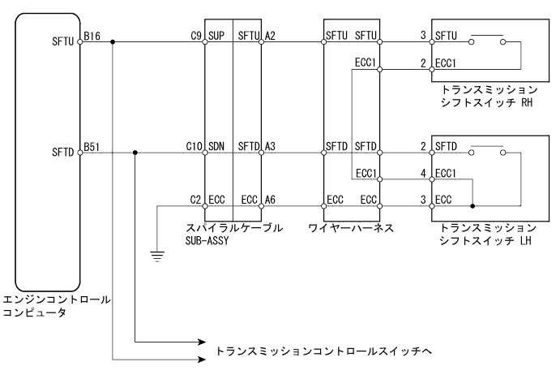
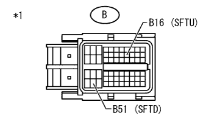
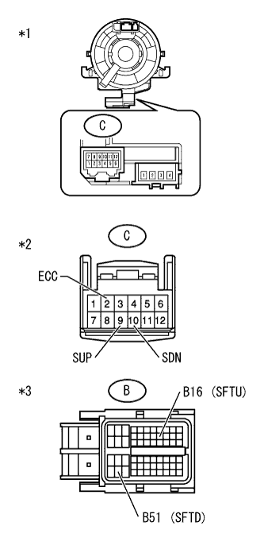
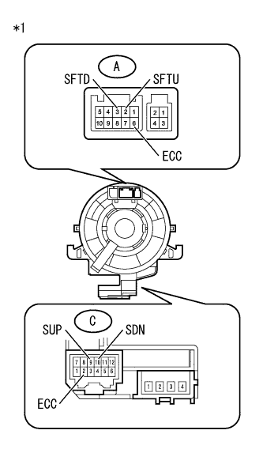
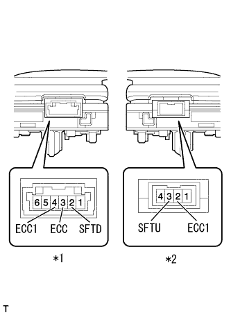

Electronically Controlled Automatic Transaxle [ECT] (U660E) Paddle Shift Switch Circuit |

| Step 1 | Read TaSCAN Data (Sport Shift UP SW / Sport Shift DOWN SW) |
Connect SST (TaSCAN) to DLC3.
Turn IG ON.
Using SST (TaSCAN), follow the screen display to display the [ECU Data Monitor] screen and check the computer data when the transmission shift switch on the steering assembly is operated to +/-.
| Item Name [Symbol] | Item Description/Display Range | Standard Value | Remarks |
|---|---|---|---|
| Sport Shift UP SW [UPS] | Indicates transmission control switch (+) Display: ON/OFF | OFF → ON: Shift switch "+" lever released → pulled | Transmission control switch (SFTU) signal |
| Sport Shift DOWN SW [DWNS] | Indicates transmission control switch (-) Display: ON/OFF | OFF → ON: Shift switch "-" lever released → pulled | Transmission control switch (SFTD) signal |
Turn IG OFF.
|
| ||||
| OK | ||
| ||
| Step 2 | Inspect Wire Harness and Connector (Transmission Shift Switch - Engine Control Computer) |
for reference.Disconnect connector B of the engine control computer.
 |
Using SST (Toyota electrical tester), measure the resistance between the terminals. (For Terminals of ECU, see)
| Tester Connection | Condition | Standard |
|---|---|---|
| B16 (SFTU) - Body ground | Pull shift switch "+" lever | Below 1 Ω |
| Neutral position | 10k Ω or higher | |
| B51 (SFTD) - Body ground | Pull shift switch "-" lever | Below 1 Ω |
| Neutral position | 10k Ω or higher |
| *1 | Vehicle wire harness connector (engine control computer connector) |
Connect connector B of the engine control computer.
|
| ||||
| OK | ||
| ||
| Step 3 | Inspect Wire Harness and Connector (Engine Control Computer - Spiral Cable Sub-assembly) |
for reference.for reference.Disconnect connector C of the spiral cable sub-assembly (w/ sensor).
 |
Disconnect connector B of the engine control computer.
Using SST (Toyota electrical tester), measure the resistance between the terminals.
| Tester Connection | Condition | Standard |
|---|---|---|
| C9 (SUP) - B16 (SFTU) | Always | Below 1 Ω |
| C10 (SDN) - B51 (SFTD) | Always | Below 1 Ω |
| C2 (ECC) - Body ground | Always | Below 1 Ω |
| Tester Connection | Condition | Standard |
|---|---|---|
| C9 (SUP) and B16 (SFTU) - Body ground | Always | 10k Ω or higher |
| C10 (SDN) and B51 (SFTD) - Body ground | Always | 10k Ω or higher |
| *1 | Spiral Cable Sub-assembly |
| *2 | Vehicle wire harness connector front view (spiral cable sub-assembly connector) |
| *3 | Vehicle wire harness connector front view (engine control computer connector) |
Connect connector B of the engine control computer.
Connect connector C of the spiral cable sub-assembly.
|
| ||||
| OK | |
| Step 4 | Inspect Spiral Cable Sub-assembly |
Remove the spiral cable sub-assembly.
for reference.Set the spiral cable sub-assembly to the center position.
Reference |
Using SST (Toyota electrical tester), measure the resistance between the terminals under the following conditions.
| Tester Connection | Condition | Standard |
|---|---|---|
| A6 (ECC) - C2 (ECC) | Always | Below 1 Ω |
| A2 (SFTU) - C9 (SUP) | Always | Below 1 Ω |
| A3 (SFTD) - C10 (SDN) | Always | Below 1 Ω |
| *1 | Component without harness connected (Spiral Cable Sub-assembly) |
Install the spiral cable sub-assembly.
for reference.
|
| ||||
| OK | |
| Step 5 | Inspect Transmission Shift Switch |
Disconnect the transmission shift switch connector.
 |
Using SST (Toyota electrical tester), measure the resistance between the terminals.
| Tester Connection | Condition | Standard |
|---|---|---|
| 3 (SFTU) - 2 (ECC1) | Shift switch RH (+) side lever pulled | Below 1 Ω |
| Shift switch RH (+) side neutral position | 10k Ω or higher | |
| 2 (SFTD) - 3 (ECC) | Shift switch LH (-) side lever pulled | Below 1 Ω |
| Shift switch LH (-) side neutral position | 10k Ω or higher | |
| 2 (SFTD) - 4 (ECC1) | Shift switch LH (-) side lever pulled | Below 1 Ω |
| Shift switch LH (-) side neutral position | 10k Ω or higher |
| *1 | Component without harness connected (Transmission Shift Switch LH) |
| *2 | Component without harness connected (Transmission Shift Switch RH) |
Connect the transmission shift switch connector.
| Result | Proceed to |
|---|---|
| NG | A |
| OK | B |
|
| ||||
| A | ||
| ||